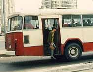
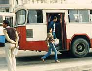
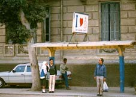

２４．「エジプトにはバス停がない？」(写真あり)
出張でエジプトに行ったとき、駐在者からエジプトではバスの停留所がなく、好きな所で飛び乗り、飛び降り
するので危険である。日本人には危ないのでバスの利用をしないようにして下さいと言われた。こちらも不慣
れなのでタクシーを使い、万が一の為に自分の住居をアラビア語で書いたメモも持って歩いた。
しばらく住み慣れると、バス停がある事が分かった。早速乗ってみることにした。先輩から聞いた話では好
きな所で降りられると聞いていたのと、自分が知らない所にバスが向かい始めたのでアラビア語で「スタンナ
（止めてくれ）」と繰り返したら止めてくれた。何だちゃんと止まるじゃないか、彼は何を思ったのだろうと
不思議に感じた。ある時後ろの降り口付近に立っていた、男性が右手で手すりにつかまり、右足をステップに
乗せ、左足をばたつかせている。だんだん早くなる。何だろうと思いしばらく様子を見ていた。彼はどうも車
のスピードに合わせて走る練習をしていることが分かった、まさか降りる訳じゃないだろうと感じた、速度は
４０Km/hr位なのであるから不可能である。しかし左足はものすごく早く瞬間４０km/hr位に成ったかなと思っ
た瞬間飛び降りたのである。走るは走るバスの速度と同じくらいで瞬間走り、急激にスピードを落し転ぶこと
なかった様である。バスは何事もなく走り去った。スンゲーの一言である。
別の日にアレキサンドリア中心街から帰宅するときにバスに乗ることにした。時はバス時間から２０分くら
い過ぎていた。何時も３０分位遅れるから大丈夫と思いバス停に向かう。その日に限ってバスが余り遅れもせず
こちらに向かい、左折し３００ｍ先のバス停に向かうがカーブでちょっとスピードが落ちた。
周りの何人かが走り始める、直感で彼らは飛び乗ると察した。
試しに挑戦をし間に合ったら乗ろうと思い、私も走り始める、バスは一時スピードを上げ又遅くなる。
前の２～３人は飛び乗った。
これなら自分もいけると思い走り、手すりをつかむそして飛び乗り成功した。車掌が目の前に居て「日本人のお前も飛
び乗りなんて下品な事をすんのかよ！」と言った呆れ顔で私を見ていた。どうもこれは下品な行動のようであっ
たしやはり危険である、それからは止めることにした。しかし飛び乗り、飛び降りは慣れたら危険であるが、
便利な事でもある事は間違いない。

カイロで偶然カメラに納めた飛び降りの瞬間である。彼は足をばたつかせて車の速度に合わせている。

車の速度と合った瞬間彼は飛び降りて、転ばないようにしばらく走った。
お！次の方も準備態勢に？

紳士、淑女カップルはバス停でバスを待っています。屋根の下に書いてある文字はアラビア文字で何系統の
番号が書かれています。時刻表は見あたりません、それこそインシャアラーなのでしょう。
|